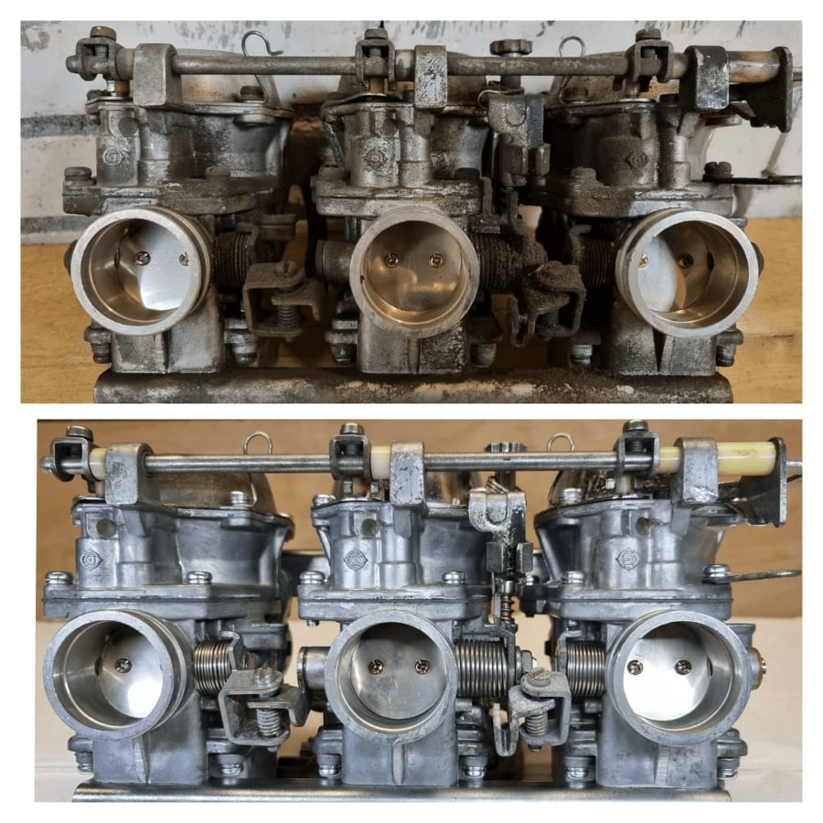

Een van de meest voorkomende problemen
Een van de meest voorkomende problemen bij motoren en oldtimers is een slecht werkende carburateur. Dit onderdeel is essentieel: het zorgt voor de juiste menging van lucht en brandstof om de motor te laten lopen. Raakt een carburateur extreem vervuild, dan ontstaan er serieuze problemen. Bij Carburateur Service Nederland kregen we onlangs zo'n uitdaging op de werkbank.
De foto's laten een carburateur zien die ernstig vervuild was. Opgehoopt vuil en afzettingen verstoorden de werking volledig, met als gevolg slechte prestaties, een onrustig stationair toerental en startproblemen. Dit exemplaar laat precies zien waarom regelmatig onderhoud en revisie zo belangrijk zijn.
Weer als nieuw
Bij Carburateur Service Nederland hebben onze specialisten de kennis en ervaring om zelfs de meest vervuilde carburateurs te herstellen. Door een grondige reiniging en een complete revisie zorgen we ervoor dat de carburateur weer als nieuw functioneert, met een optimale lucht-brandstofverhouding en een soepele werking.
Loopt jouw motor slecht, draait hij onrustig stationair of presteert hij onder de maat? Controleer dan de staat van je carburateur. Carburateur Service Nederland pakt ook de lastigste gevallen aan en brengt je motor weer in topconditie. Neem vandaag nog contact op als jouw carburateur aandacht nodig heeft.